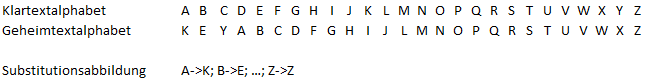

Die (monoalphabetische) Substitutionsverschlüsselung ersetzt jeden Buchstaben im Klartext durch einen anderen, basierend auf einem Geheimtextalphabet (normalerweise generiert durch den Schlüssel).
Die monoalphabetische Substitution ist neben der einfachen Transposition eine grundlegende Verschlüsselungsklasse.
Substitutionsverfahren im Allgemeinen ordnen jedem Buchstaben des Klartextes einen anderen Buchstaben des Alphabets zu, durch welchen dieser im Geheimtext ersetzt (substituiert) wird. Bei der monoalphabetischen Substitution wird ein Buchstabe a immer durch ein und denselben Buchstaben a‘ ersetzt. Diese Abbildung von a auf a‘ ist eineindeutig, das heißt, dass jeder Buchstabe a‘ auch nur genau auf a abgebildet wird. Deshalb kann man monoalphabetische Substitutionen auch durch das Klartextalphabet, und ein Substitutionsalphabet darstellen, wobei das Substitutionsalphabet der Schlüssel des Verfahrens ist. Sei A das Klartextalphabet, und A‘ das Substitutionsalphabet und a[m] bzw. a‘[m] der m-te Buchstabe in A bzw. A‘, so wird jeder Buchstabe a[n] durch den Buchstaben a‘[n] substituiert.
Da das Substitutionsalphabet der Schlüssel des Verfahrens ist, es aber unpraktisch ist, das ganze Substitutionsalphabet einzugeben, wird dieses Alphabet oft aus einem Schlüsselwort folgendermaßen generiert:
Um das Beispiel weiterzuführen, wird nun das Wort „SECRET“ mit dem Substitutionsalphabet verschlüsselt. In der Tabelle sind Klartextalphabet und Geheimtextalphabet übereinander geschrieben aufgeführt. Wie erklärt, wird nun bei der Verschlüsselung jeder Buchstabe des Wortes durch den Buchstaben ersetzt, der in der Tabelle direkt darunter steht – a[n] -> a‘[n]:

Das verschlüsselte Wort ist damit „WIGVIX“.
Bei der Entschlüsselung wird die ein-eindeutige Substitutionsabbildung umgekehrt. Man kann es so betrachten, dass das durch den Schlüssel erzeugte Alphabet zum „Klartextalphabet“ wird, das vorherige Klartextalphabet wird zum „Substitutionsalphabet“ (zum Schlüssel), und damit wird der Geheimtext zur Entschlüsselung „verschlüsselt“.